Apex Mind
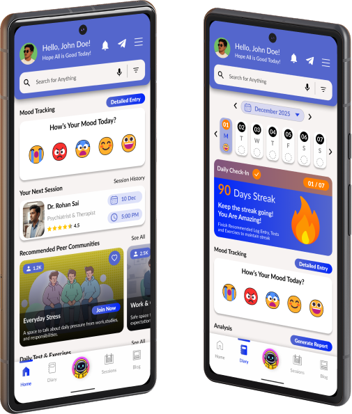
Tools Used
Figma
Photoshop
Illustrator
ChatGPT
User Research
Overview
Men’s mental health is often overlooked due to stigma and the lack of safe spaces for emotional expression. Many hesitate to seek help, resulting in stress, anxiety, and unresolved issues. There is a need for a supportive, men-focused platform that encourages openness and provides accessible emotional well-being resources.
Research
Men’s mental health continues to be under-addressed due to stigma, societal pressure, and the absence of safe emotional spaces. Many men hesitate to seek support, suppressing stress, anxiety, and personal struggles. Through surveys and 1:1 interviews, I explored how men navigate emotional well-being, what prevents them from opening up, and which gaps they face in existing support systems.
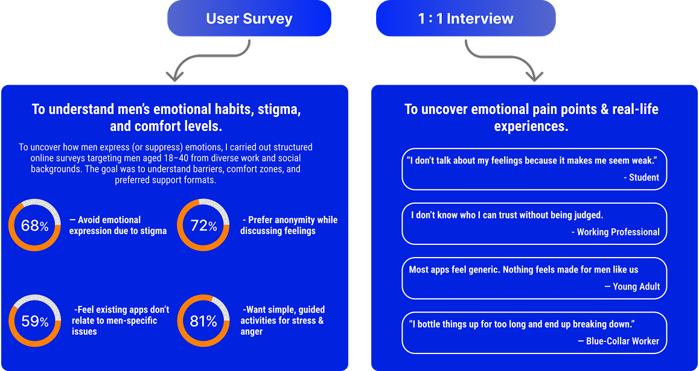
Competative Analysis
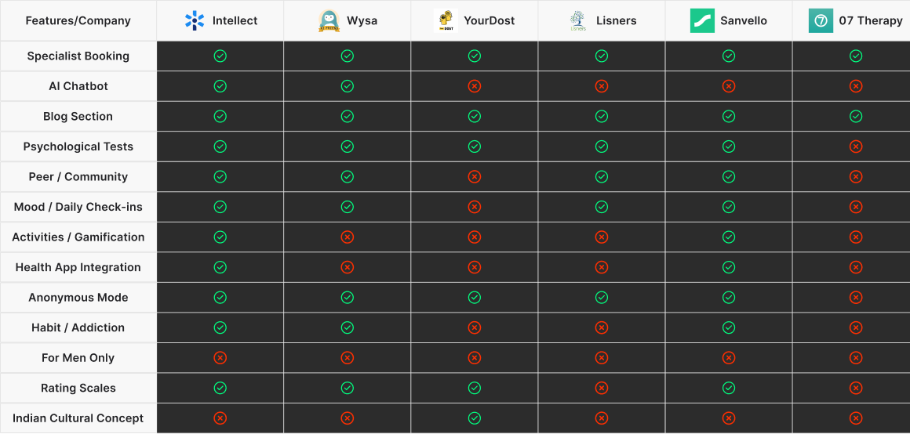
Problem Definition
Final Problem Statement
“Men experiencing mental and emotional stress need a relatable, stigma-free space that encourages openness and understanding, helping them manage their emotions without fear of judgment or pressure to appear strong.”
Pain Points Summary
Stigma
Isolation
Judgement
Relevance
Design Process
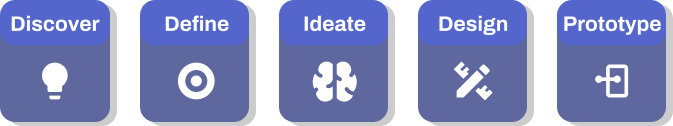
Design Approach
Information
Architecture
Wireframes
Explorations
High Fidelity
Prototype
Information Architecture
Site Map
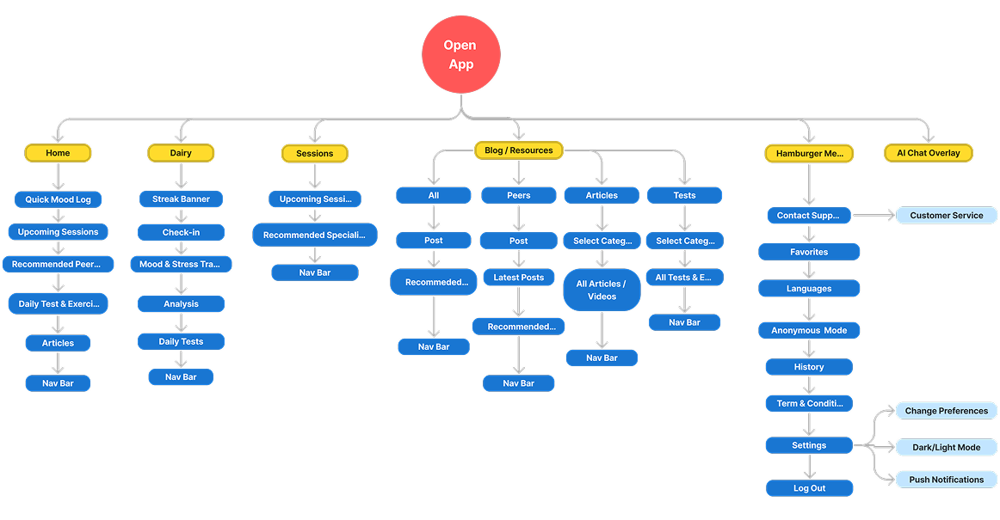
User Flows
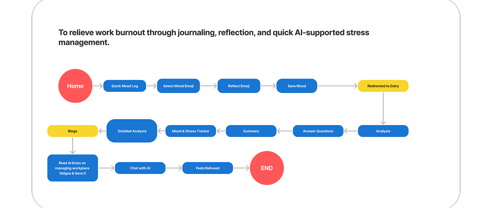
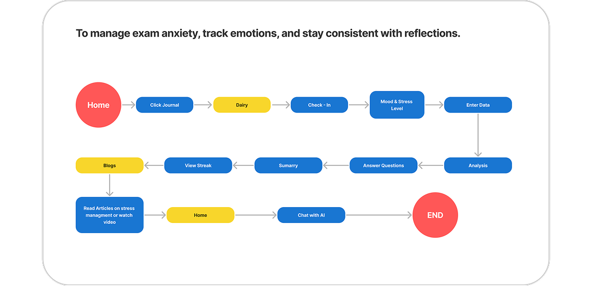
Wireframe Explorations
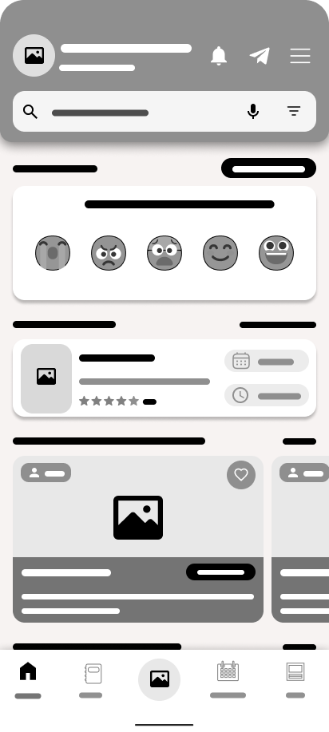
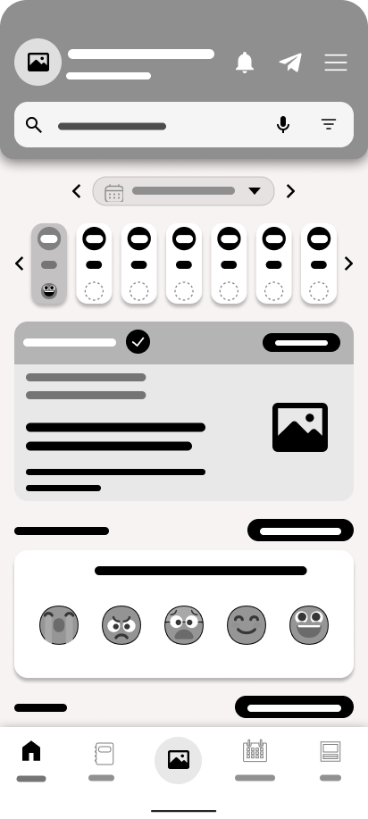
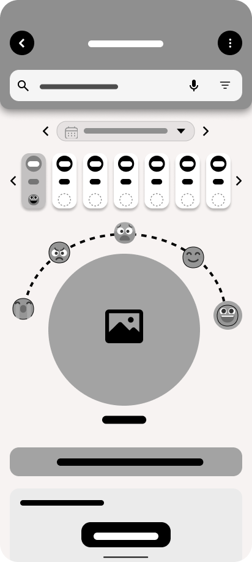
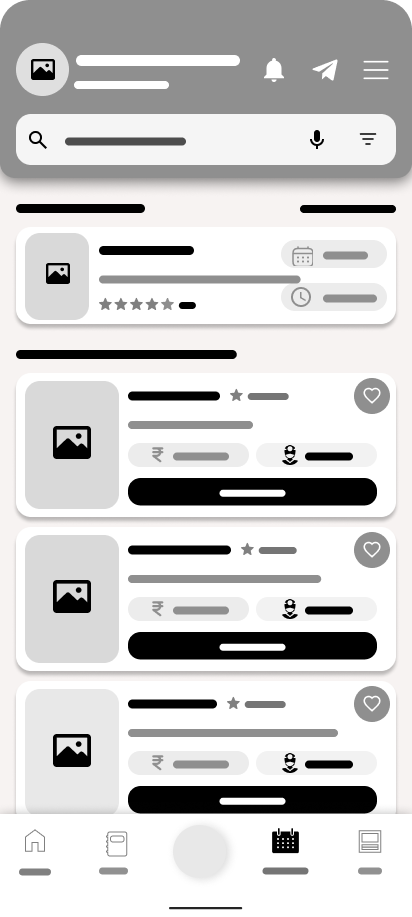
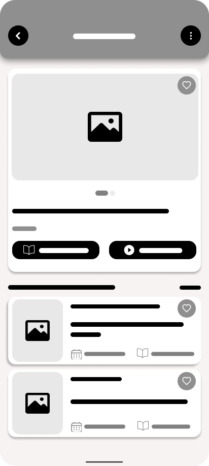
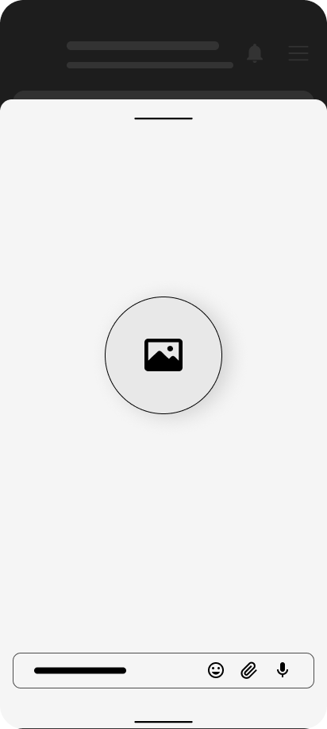
Design Execution
Style Guide
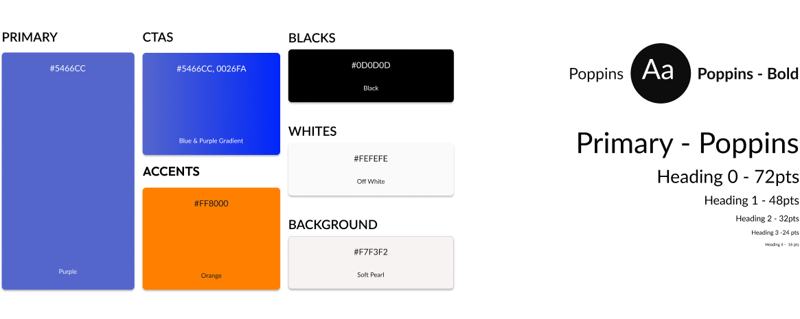
Component Library
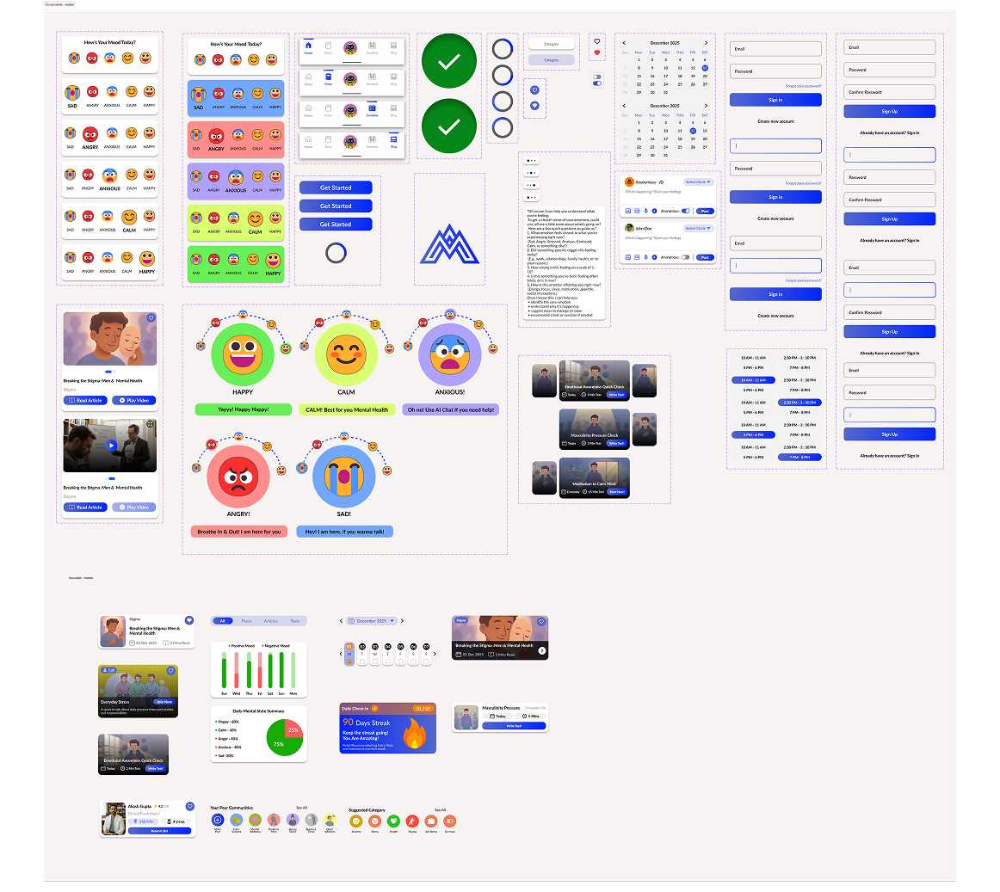
UI / UX Design
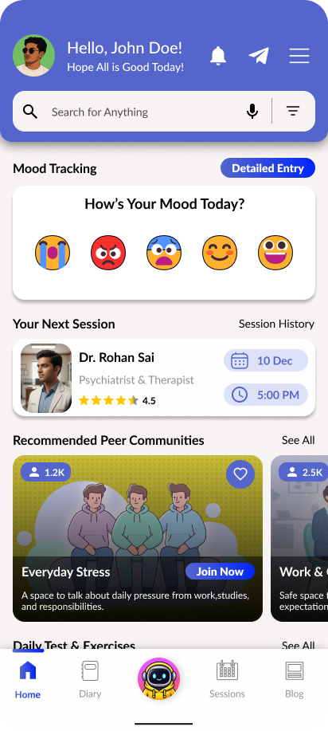
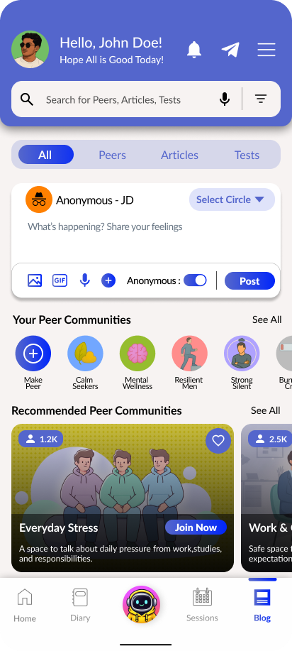
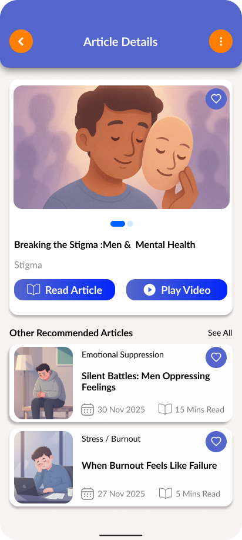
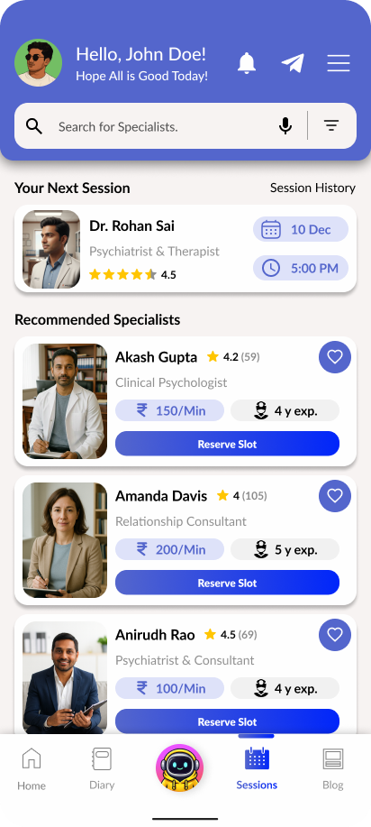
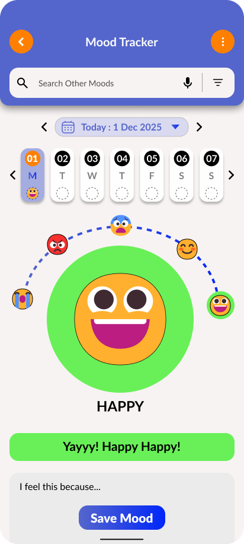
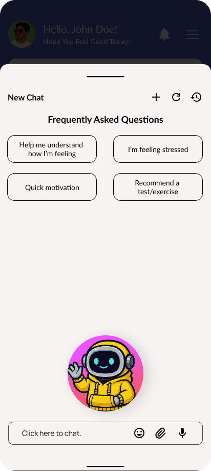
Prototyping
Usability Testing
The heuristic evaluation showed strong usability across system visibility, consistency, recognition, and user control. Navigation felt intuitive, with clear feedback and efficient shortcuts. However, improvements are needed in error states, real-world terminology, and contextual help for complex tasks. Overall, the interface is robust, with only targeted refinements required.
Benchmark Usability Testing
| Heuristic Type | Fulfilled? | Summary (Why / Why Not) |
|---|---|---|
| 1. Visibility of System Status | Fully Fulfilled | Clear feedback (highlights, loaders, typing dots, notifications, success confirmations). |
| 2. Match Between System & Real World | Partially Fulfilled | Real-world elements used well, but some labels ("Write Test", "Detailed Entry") need more intuitive wording. |
| 3. User Control & Freedom | Fully Fulfilled | Back controls, chat history, new chat, and consistent navigation give complete user freedom. |
| 4. Consistency & Standards | Fully Fulfilled | Consistent typography, colours, iconography, spacing, and uniform navigation across all screens. |
| 5. Error Prevention | Fully Fulfilled | Large WCAG-compliant tap targets, structured calendars, and restricted input options reduce errors. |
| 6. Recognition Rather Than Recall | Fully Fulfilled | Visual cues, icons, badges, navigation labels, and specialist cards reduce memory load. |
| 7. Flexibility & Efficiency of Use | Fully Fulfilled | Voice input, quick actions, frequently used shortcuts, and like buttons improve efficiency. |
| 8. Aesthetic & Minimalist Design | Partially Fulfilled | Clean layouts overall, but some pages (blog section) still feel text-heavy. |
| 9. Error Recognition & Recovery | Not Fulfilled | No visible error states (failed actions, "No results", validation errors, retry screens). Missing recovery guidance. |
| 10. Help & Documentation | Partially Fulfilled | Help Centre and onboarding exist, but missing contextual help (i-buttons/tooltips) for complex features. |
Learning Outcome
This project deepened my understanding of designing for emotional well-being, especially within a stigma-sensitive audience like men. By exploring real user pain points, hesitation, lack of safe spaces, and low engagement I learned how to create a platform that feels supportive, simple, and non-judgmental. The process strengthened my ability to craft calm interfaces, build trust through tone and visuals, and design features that encourage self-expression and long-term mental resilience.
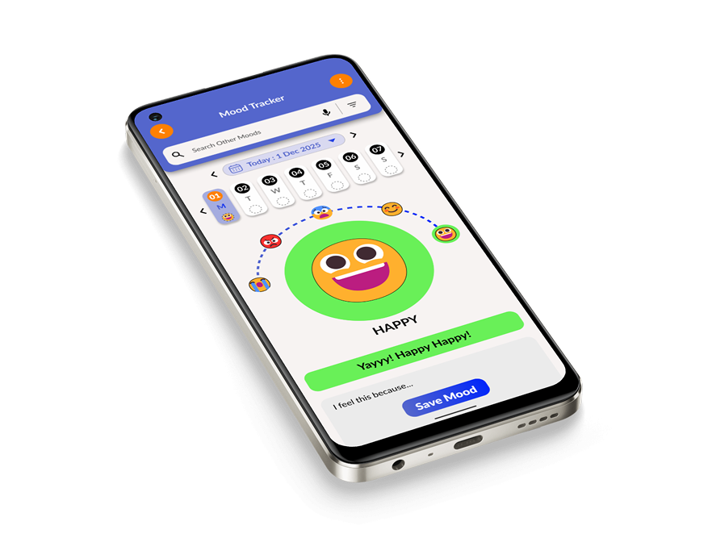